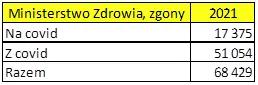
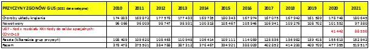

Ministerstwo Zdrowia kontra GUS, czyli ile osób umarło na test.
Z epidemiologią musiałem się zapoznać, gdy pracowałem nad programami do obliczania skutków kampanii reklamowych, jednym z najtańszych sposobów reklamowania się jest tzw. marketing wirusowy. Chodzi o to, aby ludzie za darmo powtarzali jakąś plotkę/mit o danym produkcie. Mechanizm jest identyczny jak w przypadku roznoszenia chorób przenoszonych kropelkowo, drobna różnica polega na tym, iż informacja lub wirus (który jest właśnie informacją genetyczną) ląduje w uchu, a w drugim przypadku na śluzówce odbiorcy. Skutek jest ten sam, kolejna osoba jest nośnikiem "bakcyla" i może go propagować dalej.
Gdy zaczął się lockdown napisałem soft, aby policzyć ile to potrwa, bo każda epidemia ma swój koniec. Wcześniej wpadłem na to, że informacje z testów o zakażeniach są niewiele warte. Jedyne co było pewnego to jak zwykle śmierć. Ministerstwo podawało co dzień zgony najpierw razem, potem w podziale "na covid" oraz "z covid". Zbierałem dane codziennie. Oczywiście dla mnie były istotne dane o tym, ile osób umiera "na covid" a nie na "coś innego" mając równocześnie pozytywny wynik testu.
Mamy grudzień 2022 i są w GUS dostępne dane za 2021 o zgonach w podziale na przyczyny.

Na dole tabela z historią, ale skupmy się na roku 2021. Za MZ po zsumowaniu dobowych raportów mamy 17 375 zgonów "na covid" plus 51 054 "z covid", co daje 68 429 razem. Z raportu dziś dostępnego jest to 67 394, rozumiem drobne korekty.

Zajrzyjmy teraz do danych GUS-u, mamy tu dwie dziwne sprawy:
Do przyczyn zgonów dodano nową kategorię U07 " COVID-19, wirus potwierdzony testem laboratoryjnym" oraz " COVID-19, wirus niepotwierdzony testem laboratoryjnym". Nie jest to podkategoria grupy " Choroby układu oddechowego" tylko nowy rodzaj przyczyny śmierci. Klasyfikacje to jedno, ale liczby to już konkretne zaskoczenie. Należałoby się spodziewać +-17 000 za MZ. Na siłę można użyć "logiki", że ktoś nie umarł "na covid" ,tyko "z covid" to jednak umarł "na covid", tylko dlaczego lekarz wpisał inaczej. Takich przypadków mamy 68 429 a nie 88 550. 20 000 różnicy to za dużo na drobne korekty. Coś nie styka na łączach.
Paweł Klimczewski
Dane: